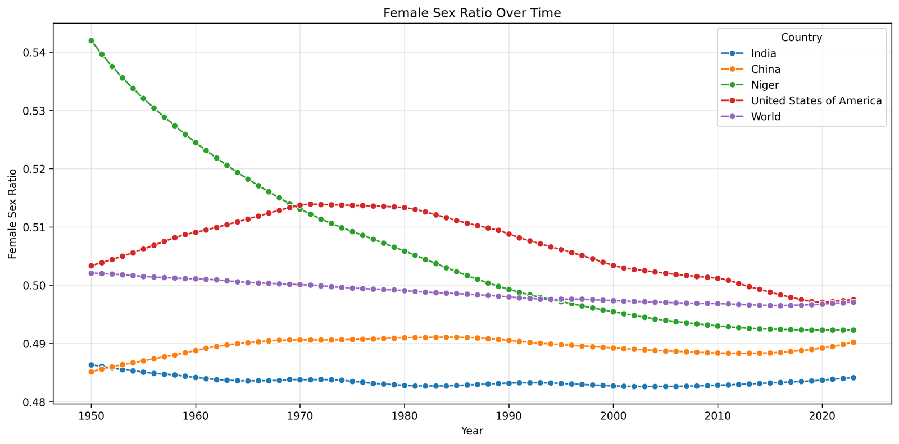
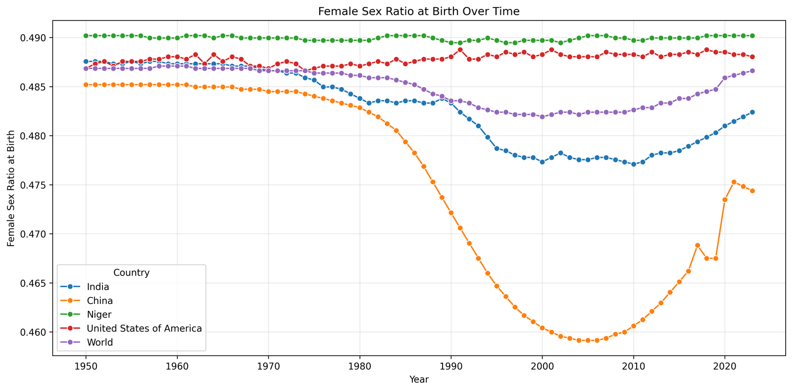
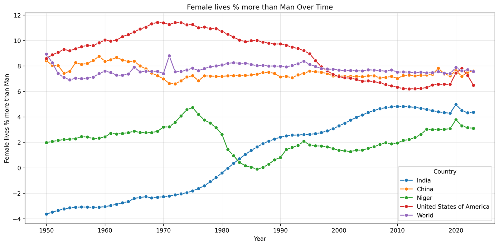
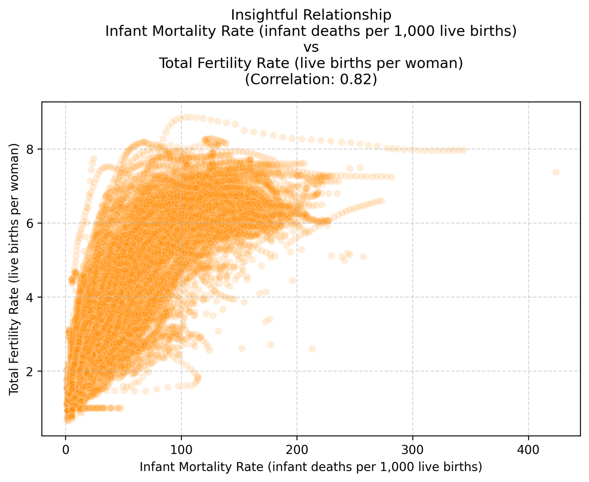
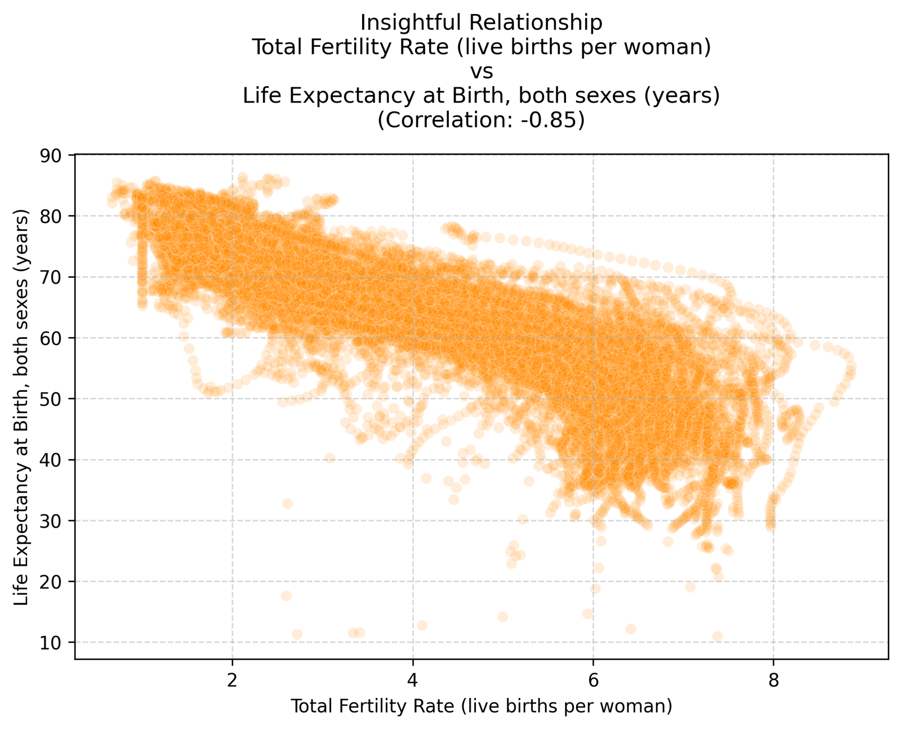
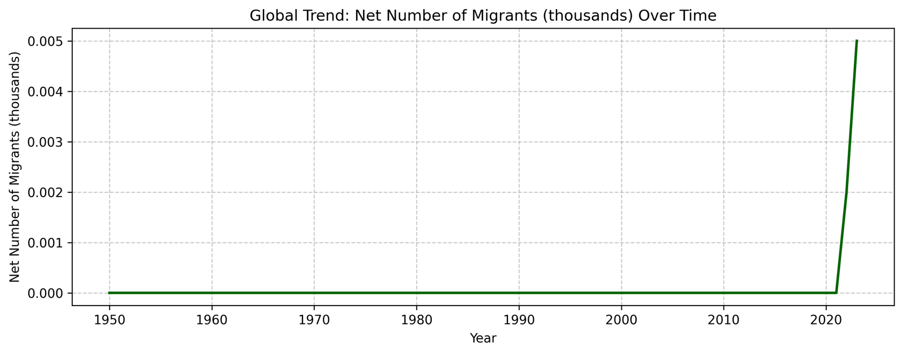

Female share of the population
Niger starts far above everyone else at about 54% female in the 1950s and falls steadily toward 49.2%. India and China stay almost flat, below 50%.
Anomaly: Niger’s early value is not biology. It comes from male labour out-migration and imprecise colonial-era back-projections made before the first real census in 1960.

Female share of births
China’s curve drops from the early 1980s, bottoms out at about 0.459 around 2004–2006, and recovers to about 0.475 by 2023. India slides from the mid-1970s, falls fastest around 1990 as ultrasound made sex-selective abortion possible, and bottoms out near 0.477 around 2010. The World dips to about 0.482 around 2000, pulled down by both.
Anomaly: China’s female share of births dipped to about 0.459 around 2004, a Sex Ratio at Birth (SRB) of about 117.8 boys per 100 girls and roughly 430,000 fewer girls that year. Niger and the USA stay near the natural level (about 0.488, or 105 boys per 100 girls).

The life expectancy gap
Women normally outlive men by 7–8%, as the World, China and the USA show. India is the exception: the line starts below zero, so men outlived women for decades, and it only turns positive in the 1980s.
Anomaly: in mid-century India the gap was 10–11 percentage points below the biological norm because of maternal mortality, unequal nutrition and son preference.

Infant mortality and fertility
The correlation is 0.82. Where more infants die, women have more children.
Pattern: this is consistent with the idea of fertility as risk compensation, where higher expected child mortality goes with higher fertility.

Life expectancy and fertility
The correlation is −0.85. As life expectancy rises, fertility falls.
Pattern: across about 21,000 records this is consistent with the demographic transition, where falling mortality is followed by falling fertility.

Global net migration
Every emigrant is an immigrant somewhere else, so global net migration should be zero. The data shows tiny positive values only at the end (0.002 thousand in 2022 and 0.005 thousand in 2023).
Anomaly: this is a statistical artifact from estimation error, different national sources and rounding. It is not real movement of people.
Anomalies, observations and patterns
- China (anomaly): the female share of births fell to about 0.459 around 2004 and this birth deficit echoes through the age structure. Around 2033 the smaller cohort of potential mothers means fewer births whatever the fertility policy. Around 2044 nearly 90% of the male surplus survives to age 40, so millions of men may be unable to marry. In the 2040s deaths are projected to pass 25 million a year and the population to shrink by over 17 million a year.
- India (anomaly and observation): women lived far less long relative to men than the biological norm because of social factors, and a TFR of about 6 against an NRR below 2 shows many daughters did not survive to reproductive age. The female share of births fell to about 0.477, starting in the 1970s and falling fastest in the 1990s. India now looks stable: median age is rising toward 28 and fertility is declining.
- Niger (anomaly): the 54% female share in the 1950s is a data illusion. Today Niger has the world’s highest birth rate and a very young population, so its sex ratio converges to the natural level of about 49% female.
- Pattern: similar summary numbers (49–50% female) can come from completely different causes: policy-driven sex selection, gender-based mortality, or a measurement artifact.
- Pattern: higher infant mortality goes with higher fertility, and higher life expectancy goes with lower fertility, across the whole global dataset.
- Data quality: thousands of IQR outliers were real size differences, and the small non-zero global migration is rounding noise.